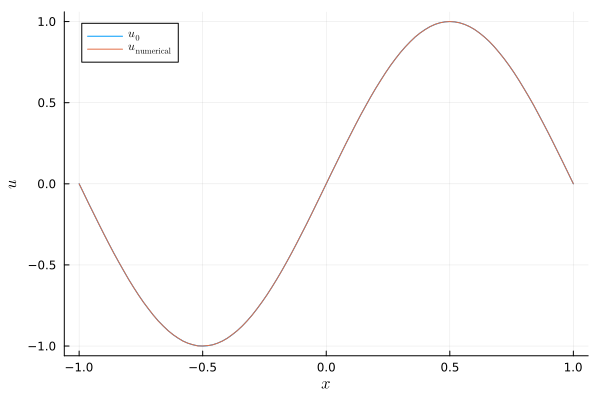

Linear advection equation with variable coefficients
This tutorial is concerned with the linear advection equation
\[\begin{aligned} \partial_t u(t,x) + \partial_x (a(x) u(t,x)) &= 0, && t \in (0,T), x \in (x_{min}, x_{max}), \\ u(0,x) &= u_0(x), && x \in (x_{min}, x_{max}), \\ \text{boundary conditions}, &&& x \in \partial (x_{min}, x_{max}) \end{aligned}\]
with variable coefficient $a$.
The boundary conditions depend on the sign of the transport velocity $a$ at the boundary. In particular, specifying a Dirichlet type boundary condition is only allowed for inflow boundaries, e.g. $a(x_{min}) > 0$ at $x = x_{min}$.
SummationByPartsOperators.jl includes a pre-built semidiscretization of this equation: VariableLinearAdvectionNonperiodicSemidiscretization. Have a look at the source code if you want to dig deeper. Below is an example demonstrating how to use this semidiscretization.
using SummationByPartsOperators, OrdinaryDiffEq
using LaTeXStrings; using Plots: Plots, plot, plot!, savefig
# general parameters
xmin = -1.
xmax = +1.
tspan = (0., 8.0)
afunc(x) = one(x)
u0func(x) = sinpi(x)
# Dirichlet type boundary conditions; they are used only at inflow boundaries
left_bc(t) = t >= 3 ? sinpi(t) : zero(t)
right_bc(t) = zero(t)
# discretization parameters
interior_order = 4
N = 101
# whether a split form should be applied or not
split_form = Val(false)
# setup spatial semidiscretization
D = derivative_operator(MattssonSvärdShoeybi2008(), 1, interior_order, xmin, xmax, N)
# whether or not artificial dissipation should be applied: nothing, dissipation_operator(D)
Di = nothing
semi = VariableLinearAdvectionNonperiodicSemidiscretization(D, Di, afunc, split_form, left_bc, right_bc)
ode = semidiscretize(u0func, semi, tspan)
# solve ODE
sol = solve(ode, SSPRK104(), dt=D.Δx, adaptive=false,
save_everystep=false)
# visualise the result
plot(xguide=L"x", yguide=L"u")
plot!(evaluate_coefficients(sol[1], semi), label=L"u_0")
plot!(evaluate_coefficients(sol[end], semi), label=L"u_\mathrm{numerical}")
savefig("example_linear_advection.png");"/home/runner/work/SummationByPartsOperators.jl/SummationByPartsOperators.jl/docs/build/tutorials/example_linear_advection.png"
Package versions
These results were obtained using the following versions.
using InteractiveUtils
versioninfo()
using Pkg
Pkg.status(["SummationByPartsOperators", "OrdinaryDiffEq"],
mode=PKGMODE_MANIFEST)Julia Version 1.6.7
Commit 3b76b25b64 (2022-07-19 15:11 UTC)
Platform Info:
OS: Linux (x86_64-pc-linux-gnu)
CPU: Intel(R) Xeon(R) Platinum 8171M CPU @ 2.60GHz
WORD_SIZE: 64
LIBM: libopenlibm
LLVM: libLLVM-11.0.1 (ORCJIT, skylake-avx512)
Environment:
JULIA_PKG_SERVER_REGISTRY_PREFERENCE = eager
Status `~/work/SummationByPartsOperators.jl/SummationByPartsOperators.jl/docs/Manifest.toml`
[1dea7af3] OrdinaryDiffEq v6.51.2
[9f78cca6] SummationByPartsOperators v0.5.49 `~/work/SummationByPartsOperators.jl/SummationByPartsOperators.jl`